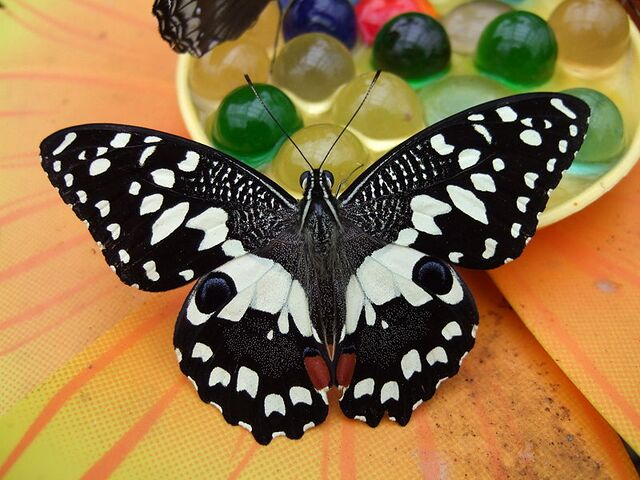
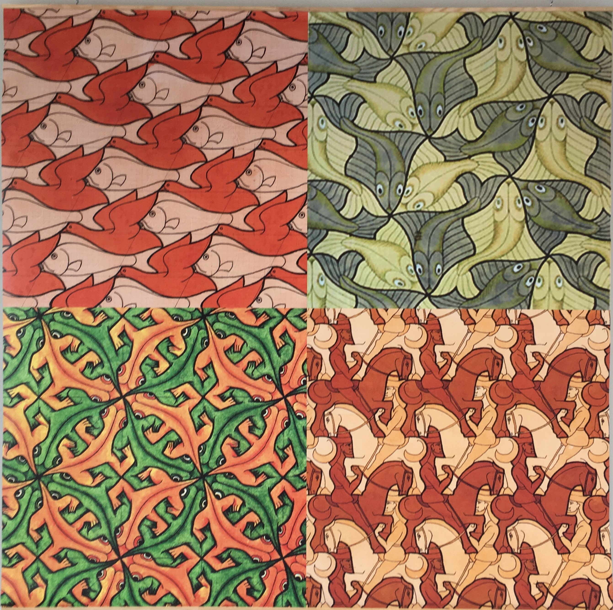
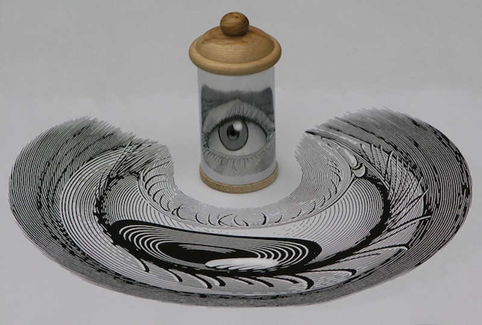

Les Transformations Géométriques
Explorez les transformations du plan en vous amusant !
Voici un papillon qui illustre la symétrie orthogonale. Les ailes du papillon sont identiques de part et d'autre de l'axe de symétrie.

Les fractales sont des structures qui présentent une symétrie centrale. Chaque partie ressemble au tout.
Une loupe effectue un agrandissement. Elle nous permet de voir les détails en gros plan.
L'artiste M.C. Escher a créé des œuvres basées sur la translation. Ses dessins jouent avec notre perception de l'espace.
Un miroir cylindrique peut produire une anamorphose. L'image réfléchie est déformée mais reprend sa forme correcte lorsqu'on la regarde dans le miroir.
 Télécharger le ActivInspire
Télécharger le ActivInspire